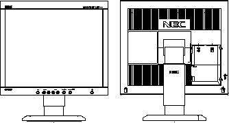

Operating Documentation
Direction 5114043-800, Rev# 9
LightSpeed 3.X Service Methods (Advanced)
Operating Documentation |
The 1850X is a high performance 18.1” LCD (Liquid Crystal Display) monitor capable of over displaying 16 million colors. It is manufactured by NEC™ and “Ambix” Technology, which is a dual input technology allowing both analog and digital inputs off of one connector.
The monitor is set up and configured for use through using its on-board menu system (OSM). Please see LCD Video Monitor Setup - NEC 1850X for help using the OSM. For further information on this monitor, consult the NEC website: http://www.necmitsubishi.com.
Illustration 1: LCD Monitor (NEC 1850x)

LCD: a-Si active matrix thin-film-transistor (TFT)
Effective display size: (Landscape) 14.14”(H) x 11.31”(V) / 359.04mm(H) x 287.232mm(V)
18.1” / 46cm diagonal
Viewing angle: Up 85 deg. / down 85 deg. / right 85 deg. / left 85 deg. (Typical)
Net Weight (Excluding stand): 12.1lbs / 5.5Kg
Total Power Consumption: 65 watts (typical) in “ON” mode and less than 3 watts in power saving mode.
Operating Environment: Temperature +41 to +95 deg.F / +5 to +35 deg.C
Humidity 30% to 80%
Altitude 0 to 10,000 Feet / 3,048m